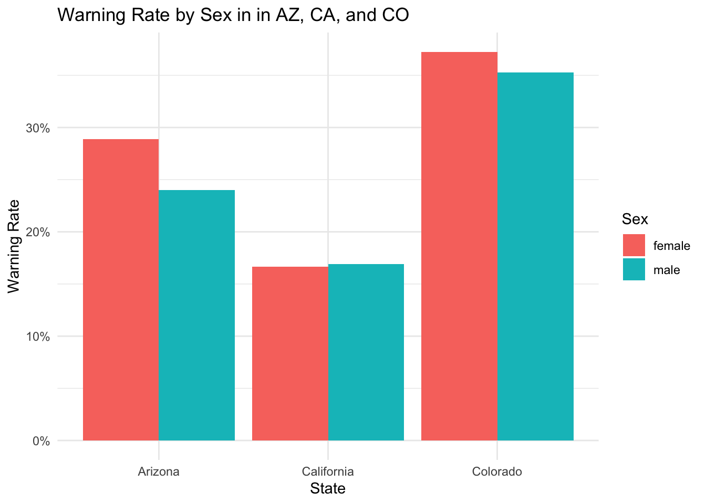
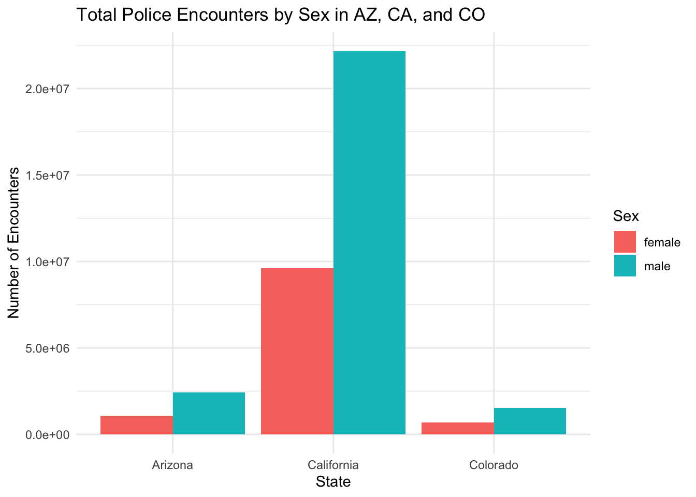

con_traffic <- DBI::dbConnect(
RMariaDB::MariaDB(),
dbname = "traffic",
host = Sys.getenv("TRAFFIC_HOST"),
user = Sys.getenv("TRAFFIC_USER"),
password = Sys.getenv("TRAFFIC_PWD")
)Police Stops
Analysis of data from the Stanford Open Policing Project
Here are the names of all the tables that we have at our disposal.
SHOW TABLES;| Tables_in_traffic |
|---|
| ar_little_rock_2020_04_01 |
| az_gilbert_2020_04_01 |
| az_mesa_2023_01_26 |
| az_statewide_2020_04_01 |
| ca_anaheim_2020_04_01 |
| ca_bakersfield_2020_04_01 |
| ca_long_beach_2020_04_01 |
| ca_los_angeles_2020_04_01 |
| ca_oakland_2020_04_01 |
| ca_san_bernardino_2020_04_01 |
Here is an example of what the data looks like for a given state.
SELECT * FROM ca_statewide_2023_01_26 LIMIT 10;| raw_row_number | date | county_name | district | subject_race | subject_sex | department_name | type | violation | arrest_made | citation_issued | warning_issued | outcome | contraband_found | frisk_performed | search_conducted | search_person | search_basis | reason_for_stop | raw_race | raw_search_basis | raw_location_code |
|---|---|---|---|---|---|---|---|---|---|---|---|---|---|---|---|---|---|---|---|---|---|
| 1 | 2009-07-01 | Stanislaus | Modesto | other | male | California Highway Patrol | vehicular | Motorist / Public Service | NA | NA | NA | NA | NA | NA | 0 | 0 | NA | Motorist / Public Service | Other | Vehicle Inventory | 465 |
| 2 | 2009-07-01 | Stanislaus | Modesto | hispanic | female | California Highway Patrol | vehicular | Moving Violation (VC) | 0 | 0 | 0 | summons | NA | NA | 0 | 0 | NA | Moving Violation (VC) | Hispanic | Probable Cause (positive) | 465 |
| 3 | 2009-07-01 | Stanislaus | Modesto | hispanic | female | California Highway Patrol | vehicular | Moving Violation (VC) | 0 | 0 | 0 | summons | NA | NA | 1 | NA | other | Moving Violation (VC) | Hispanic | Probable Cause (positive) | 465 |
| 4 | 2009-07-01 | Stanislaus | Modesto | white | female | California Highway Patrol | vehicular | Moving Violation (VC) | 0 | 0 | 0 | summons | NA | NA | 0 | 0 | NA | Moving Violation (VC) | White | Probable Cause (positive) | 465 |
| 5 | 2009-07-01 | Stanislaus | Modesto | hispanic | male | California Highway Patrol | vehicular | Moving Violation (VC) | 0 | 0 | 0 | summons | NA | NA | 1 | NA | other | Moving Violation (VC) | Hispanic | Probable Cause (positive) | 465 |
| 6 | 2009-07-01 | Stanislaus | Modesto | hispanic | male | California Highway Patrol | vehicular | Moving Violation (VC) | 0 | 0 | 0 | summons | NA | NA | 0 | 0 | NA | Moving Violation (VC) | Hispanic | Probable Cause (positive) | 465 |
| 7 | 2009-07-01 | Stanislaus | Modesto | hispanic | female | California Highway Patrol | vehicular | Moving Violation (VC) | 0 | 0 | 0 | summons | NA | NA | 0 | 0 | NA | Moving Violation (VC) | Hispanic | Probable Cause (positive) | 465 |
| 8 | 2009-07-01 | Stanislaus | Modesto | other | female | California Highway Patrol | vehicular | Moving Violation (VC) | 0 | 0 | 0 | summons | NA | NA | 0 | 0 | NA | Moving Violation (VC) | Other | Probable Cause (positive) | 465 |
| 9 | 2009-07-01 | Stanislaus | Modesto | hispanic | male | California Highway Patrol | vehicular | Moving Violation (VC) | 0 | 0 | 0 | summons | NA | NA | 0 | 0 | NA | Moving Violation (VC) | Hispanic | Probable Cause (positive) | 465 |
| 10 | 2009-07-01 | Stanislaus | Modesto | white | female | California Highway Patrol | vehicular | Mechanical or Nonmoving Violation (VC) | 0 | 0 | 1 | warning | NA | NA | 0 | 0 | NA | Mechanical or Nonmoving Violation (VC) | White | Probable Cause (negative) | 465 |
This week, I want to answer the question of which sex has the most police interactions and which gets off with a warning most often? I will be analyzing the data from police encounters in three western states, California, Colorado, and Arizona, and then I will present the results for each of them. I wonder if the results will differ based on the state, and I wonder if there will be a significant difference between the number of warnings given to males and females.
I will begin by extracting the relevant data from from each state’s statewide data table by joining tables containing the total number of encounters for each sex with tables containing the total number of warnings for each sex.
Arizona:
SELECT
total.subject_sex,
total.total_stops,
warnings.warning_stops,
'Arizona' AS state
FROM
(SELECT subject_sex, COUNT(*) AS total_stops
FROM az_statewide_2020_04_01
GROUP BY subject_sex) AS total
LEFT JOIN
(SELECT subject_sex, COUNT(*) AS warning_stops
FROM az_statewide_2020_04_01
WHERE outcome = 'warning'
GROUP BY subject_sex) AS warnings
ON total.subject_sex = warnings.subject_sex
ORDER BY total.total_stops DESC;Colorado:
SELECT
total.subject_sex,
total.total_stops,
warnings.warning_stops,
'Colorado' AS state
FROM
(SELECT subject_sex, COUNT(*) AS total_stops
FROM co_statewide_2020_04_01
GROUP BY subject_sex) AS total
LEFT JOIN
(SELECT subject_sex, COUNT(*) AS warning_stops
FROM co_statewide_2020_04_01
WHERE outcome = 'warning'
GROUP BY subject_sex) AS warnings
ON total.subject_sex = warnings.subject_sex
ORDER BY total.total_stops DESC;California:
SELECT
total.subject_sex,
total.total_stops,
warnings.warning_stops,
'California' AS state
FROM
(SELECT subject_sex, COUNT(*) AS total_stops
FROM ca_statewide_2023_01_26
GROUP BY subject_sex) AS total
LEFT JOIN
(SELECT subject_sex, COUNT(*) AS warning_stops
FROM ca_statewide_2023_01_26
WHERE outcome = 'warning'
GROUP BY subject_sex) AS warnings
ON total.subject_sex = warnings.subject_sex
ORDER BY total.total_stops DESC;Now that I have stored the data from each State in my environment, I will combine them into one clean table called ‘combined’.
library(dplyr)
combined <- bind_rows(California, Colorado, Arizona)
combined <- combined |>
mutate(
warning_rate = warning_stops / total_stops,
subject_sex = recode(subject_sex, 'M' = 'Male', 'F' = 'Female')
)
combined subject_sex total_stops warning_stops state warning_rate
1 male 22161713 3752285 California 0.1693139
2 female 9616706 1604121 California 0.1668057
3 <NA> 96 <NA> California NA
4 male 1527440 538666 Colorado 0.3526594
5 <NA> 896526 <NA> Colorado NA
6 female 688887 256601 Colorado 0.3724863
7 male 2429540 582966 Arizona 0.2399491
8 female 1064582 307681 Arizona 0.2890158
9 <NA> 4037 <NA> Arizona NAFinally, I can observe the differences between the Warning Rates amongst the sexes for each state.
library(ggplot2)
combined |>
filter(!is.na(subject_sex)) |>
ggplot(aes(x = state, y = warning_rate, fill = subject_sex)) +
geom_col(position = "dodge") +
scale_y_continuous(labels = scales::percent) +
labs(
title = "Warning Rate by Sex in in AZ, CA, and CO",
x = "State",
y = "Warning Rate",
fill = "Sex"
) +
theme_minimal()
This plot displays the percentage of police encounters that result in a warning for each sex, broken up by State.
In Arizona and Colorado, females were given a warning slightly more often than males, but in California, the proportions are essentially the same. This was somewhat surprising to me because in movies and media, it is fairly common to either make-fun or depict the apparent concept that women can appeal to their looks to get off more easily. We must analyze more data to be sure one way or the other, but the idea that women get let off with a warning more often than men do is not so readily apparent. It should also be noted that the data table from California is much larger than either of the two other states, so variance is less likely to interfere with the result.
library(ggplot2)
library(dplyr)
combined |>
filter(!is.na(subject_sex)) |>
group_by(state, subject_sex, .drop = TRUE) |>
summarise(total_stops = sum(total_stops), .groups = "drop") |>
ggplot(aes(x = state, y = total_stops, fill = subject_sex)) +
geom_col(position = "dodge") +
labs(
title = "Total Police Encounters by Sex in AZ, CA, and CO",
x = "State",
y = "Number of Encounters",
fill = "Sex"
) +
theme_minimal()
This plot displays the total number of police stops by gender in each of the three states, Colorado, Arizona, and California, and the results are very significant! In each case, males encounter police more than twice as often as females do! Although this fact has been well documented, it has not been depicted nearly is much in our society’s media culture. Of course, the reasons for this large of a discrepancy are likely multiple, but among them could be a systemic propensity for cops to choose to pull-over or interact with males over females. Other research also suggests that the majority of this difference stems from the two facts that men drive more often than women and tend to be riskier and more aggressive.
References:
Pierson, Emma, Camelia Simoiu, Jan Overgoor, Sam Corbett-Davies, Daniel Jenson, Amy Shoemaker, Vignesh Ramachandran, et al. 2020. “A Large-Scale Analysis of Racial Disparities in Police Stops Across the United States.” Nature Human Behaviour, 1–10.